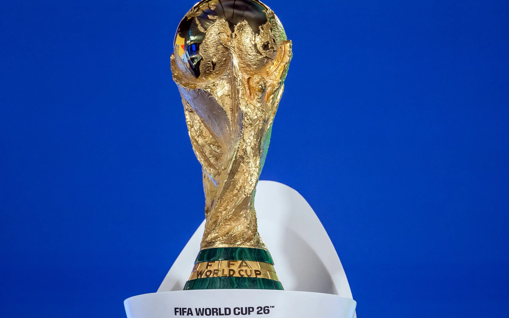

de 11 de junho a 19 de julho de 2026

A copa de 2026 é a 23ᵃ edição do torneio e entrou para a história antes mesmo de começar: foi a primeira disputada por 48 seleções contra 32 nas edições anteriores
também foi a Copa organizada por três países ao mesmo tempo.